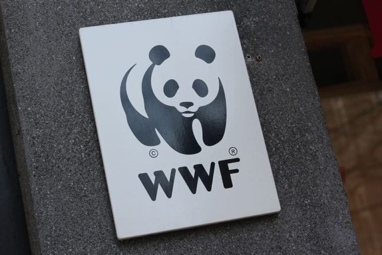
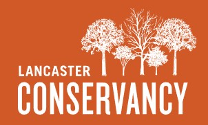

Environmental Projects
 Land Conservancy of Adams County
Land Conservancy of Adams County
Preserving the rural lands and character of Adams County, Pennsylvania.
 Gettysburg Nature Alliance
Gettysburg Nature Alliance
Founded in 2019, the mission is to preserve, educate, and rehabilitate Gettysburg’s habitat and heritage—one of the nation’s most recognizable places.

World Wildlife FundMonthly giving is the most impactful way to protect wildlife and nature. WWF Heroes are creating a healthier future for our planet.

Lancaster Conservancy